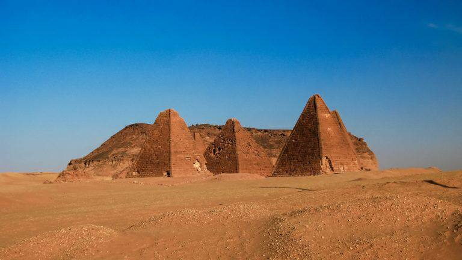

SUDAN
جبل البركل والاثار المجاورة- السودان

السودان هو بقعة العرب السياحية تاغتئبة عن الأنظار
والتي يتجاهلها الكثيرون رغم ما يحتوية من اثار وأماكن
طبيعية خلابة. جبل البركل واثاره مثال علي ما خلفته الثقافة النوبية
في هذه المنطقة من أهرامات وقصور وكعابد . اليوم تقام
المهرجانات عند سفح الجبل لتشجيع السياحة